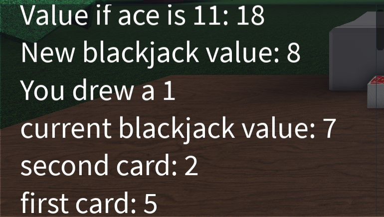
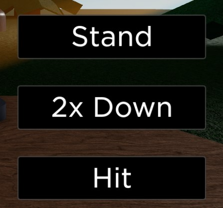
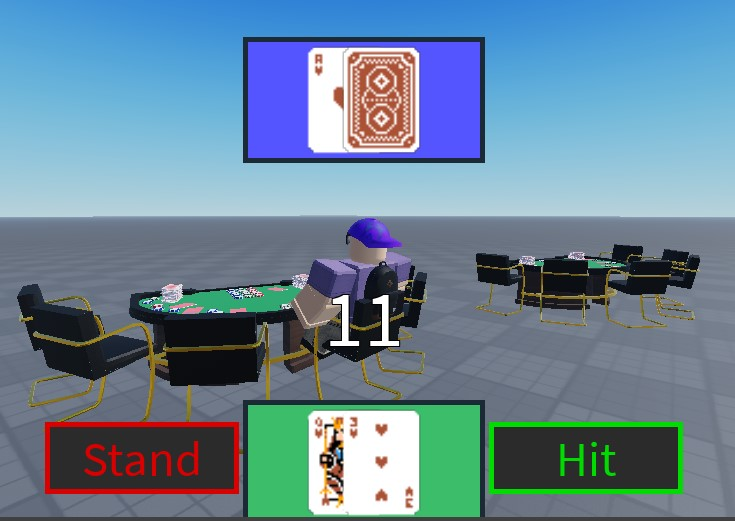
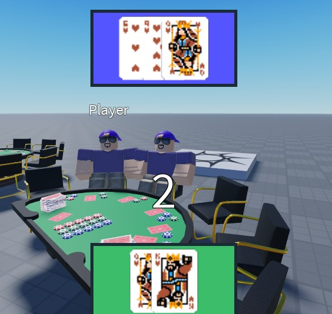

Blackjack
I'm a big fan of casino-style card games. I love hanging out with friends and playing poker all night, cracking jokes and spending time with one another. I took some inspiration from this, and decided to try and recreate the game blackjack in a virtual world.
The Original - 2020
 My first attempt at making blackjack was over the Summer of 2020, and is the more complete version of the game. It features a betting system, user input through UI, and text-based output. It also allows players to double down on their bets, drawing a single card while doubling their bet, and features the blackjack feature where, if a player has an ace and any card with a value of 10 as their first 2 cards, then they get back 1.5x their bet.
 In terms of coding, this blackjack game was my first use of object oriented programming in Roblox, having just learned about OOP the previous year in a high school computer science course. I created classes to represent both a card and a blackjack hand, named Card and BlackJack respectively. Utilizing this new style of program, I was able to write much cleaner and concise code than I ever had before, giving me the motivation and confidence to make a relatively complete product. You can give the game a try here.
The Remake - 2022/2023
While I was proud of the game I had created 2 years before, the blackjack I created wasn't my original vision for the game. I had hope that I'd be able to create a nice UI, featuring full face cards that'd slide smoothly from the deck into a player's hand. I also didn't like the lack of any sort of multiplayer functionality. As such, over the 2022-2023 winter break, I decided to reboot my old project, attempting to implement support for multiple players at a table, as well as a fresher UI.
 When you load up the game, the most notable change is that you are no longer glued to a picnic bench in some obscure forest. You are instead free to roam around and join in on any table you'd like, depending on how many players are already there. When you sit at a table, a countdown begins, allowing for other players to join before the hand starts. Once it does, a vastly improved UI shows you your hand, as well as half of the dealer's, using actual images of cards as opposed to just numbers (credit to drawsgood for the card assets).

I cannot express enough how happy I am with the outcome of this remake. In addition to multiplayer support and a sharp UI, the
game's entire flow is much more solid, relying less on Roblox's built-in wait function and instead utilizing a more
sophisticated event-based approach.
The remake is also more true to the game of blackjack itself, allowing the player to preview the dealer's first card, as well as utilizing an actual deck system that has a limited number of each card. This provides for a much more successful and authentic recreation of blackjack.
Unfortunately, I didn't have enough time over break (this game was created in less than 3 weeks) to add some core features to the game, such as betting, doubling down, or splitting hands. However, I am still proud of the work I got done, and look forward to continuing development in the future.